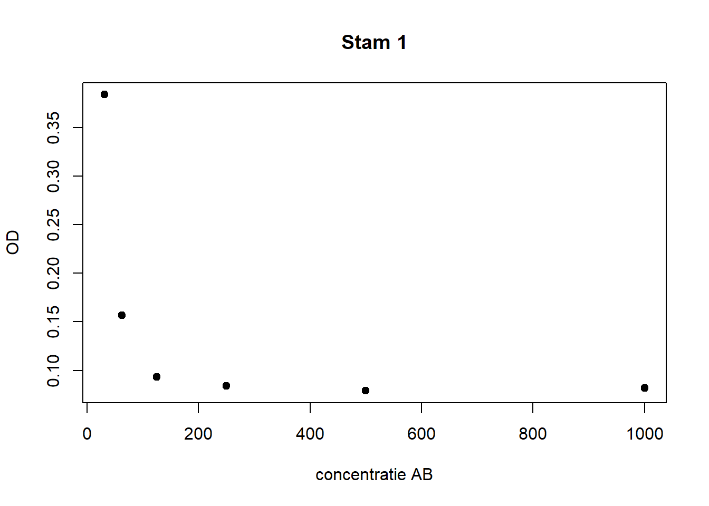

In dit COO leer je gemiddelden en (95%) betrouwbaarheidsintervallen berekenen, en absorptie data plotten tegenover de concentraties van een antibioticum.
Zorg er voor dat je de benodigde databestanden hebt gedownload en lokaal hebt opgeslagen:
Het is ook handig om je ‘working directory’ te veranderen in deze map met databestanden. Dit kun je doen via het menu: Session > Set Working Directory > Choose Directory… > selecteer de map waarin de databestanden staan. Let op tijdens het instellen van je ‘working directory’ zie je de bestanden meestal niet staan.
Verder maken we gebruik van functies uit de psych
package. Als je die nog niet hebt geïnstalleerd, doe dat nu met de
functie install.packages(“psych”). Daarna kunnen we hem
inladen:
library(psych)In de zelfstudie is gekeken naar de optische densiteit (OD) bij een concentratie van het antibioticum van 250 mg/l. We gebruiken hier hetzelfde voorbeeld en kijken stap-voor-stap hoe we de data kunnen beschrijven, en hoe een 95% betrouwbaarheidsinterval (BHI) in R te laten berekenen.
De data zijn opgeslagen in een het bestand OD250.csv. We
lezen de data in en noemen de data frame d1. We bekijken de
eerste regels met head:
d1 <-read.csv("OD250.csv")dim(d1)## [1] 72 2head(d1)## stam OD250
## 1 1 0.091
## 2 2 0.369
## 3 3 0.488
## 4 4 0.563
## 5 5 0.313
## 6 6 0.359Vraag 1. Maak de side-by-side boxplot uit de zelfstudie van de OD bij 250 mg/l per stam.
Om een gemiddelde OD en standaarddeviatie per stam te krijgen, kunnen
we steeds een selectie maken op de verschillende stammen en vrage om die
kengetallen. Veel makkelijker: we kunnen de describeBy()
functie gebruiken (we krijgen dan veel meer dan mean & SD):
describeBy(d1$OD250, group = d1$stam, skew = FALSE)##
## Descriptive statistics by group
## group: 1
## vars n mean sd min max range se
## X1 1 12 0.12 0.11 0.07 0.45 0.38 0.03
## -------------------------------------------------------------------
## group: 2
## vars n mean sd min max range se
## X1 1 12 0.28 0.11 0.14 0.49 0.36 0.03
## -------------------------------------------------------------------
## group: 3
## vars n mean sd min max range se
## X1 1 12 0.46 0.18 0.06 0.73 0.67 0.05
## -------------------------------------------------------------------
## group: 4
## vars n mean sd min max range se
## X1 1 12 0.61 0.12 0.42 0.82 0.4 0.03
## -------------------------------------------------------------------
## group: 5
## vars n mean sd min max range se
## X1 1 12 0.18 0.15 0.09 0.59 0.5 0.04
## -------------------------------------------------------------------
## group: 6
## vars n mean sd min max range se
## X1 1 12 0.33 0.1 0.12 0.46 0.34 0.03Vraag 2. Welke stam heeft de hoogste gemiddelde OD? Welke stam heeft de kleinste standaarddeviatie? En de grootste?
Laten we nu kijken naar stam 2. We hebben al een gemiddelde OD uitgerekend, wat is het 95% BHI voor de gemiddelde OD bij een concentratie van het antibioticum van 250 mg/l voor stam 2?
Vraag 3. Voor je het BHI uitrekent, kijk nogmaals naar de boxplot. Mogen we voor zo’n steekproef een BHI uitrekenen? Wat nemen we aan wanneer we dat doen?
We gaan het toch doen. Om een 95% BHI (op basis van de t-verdeling)
uit te rekenen, maken we gebruik van de t-test() functie.
De t-toets wordt in Thema 3 behandeld, hier gebruiken we de functie
alleen voor het 95% BHI. We maken eerst een selectie van stam 2:
stam2 <- d1[d1$stam == 2,]
t.test(stam2$OD)##
## One Sample t-test
##
## data: stam2$OD
## t = 8.7514, df = 11, p-value = 2.755e-06
## alternative hypothesis: true mean is not equal to 0
## 95 percent confidence interval:
## 0.2077084 0.3472916
## sample estimates:
## mean of x
## 0.2775De gemiddelde OD is 0.277, met 95% BHI (0.208 – 0.347).
Vraag 4. Geef een interpretatie van dit BHI.
Stel dat we de optical density bij concentratie 250 mg/l willen
vergelijken tussen stammen twee en drie. Dan hebben we twee groepen van
metingen die we hier voor het gemak beschouwen als onafhankelijk van
elkaar (zie overpeinzingen in de zelfstudie). Is het verschil dat we in
de boxplot zien tussen de twee stammen een weerspiegeling van een
werkelijk verschil in de populaties (alle mogelijke OD metingen bij 250
mg/l for stammen 2 en 3), of zou dit verschil door toeval
(steekproefvariabiliteit) kunnen zijn onstaan? Om die vraag te
beantwoorden, kunnen we een 95% BHI voor het verschil in gemiddelden
uitrekenen. Daartoe maken we eerst een selectie van alleen die twee
stammen, en daarna gebruiken weer de t-test() functie.
stam23 <- d1[d1$stam == 2 | d1$stam == 3,]
t.test(stam23$OD ~ stam23$stam)##
## Welch Two Sample t-test
##
## data: stam23$OD by stam23$stam
## t = -3.0595, df = 18.418, p-value = 0.006621
## alternative hypothesis: true difference in means between group 2 and group 3 is not equal to 0
## 95 percent confidence interval:
## -0.30930175 -0.05769825
## sample estimates:
## mean in group 2 mean in group 3
## 0.2775 0.4610Het verschil in gemiddelden in de steekproeven is 0.2775-0.461 = -0.184, met 95% BHI (-0.309 – -0.058).
Vraag 5a. Geef een interpretatie van dit BHI. Denk je dat er een verschil is in gemiddelden in de populatie?
Vraag 5b. Wat nemen we aan bij het uitrekenen van dit BHI? Voldoen de gegevens aan deze aannames?
In het bestand ODdatavb.csv staan data van een
experiment zoals je zelf gaat uitvoeren: voor zes verschillende
bacteriestammen kijk je bij verschillende concentraties van een
antibioticum naar de groei(remming). De groei wordt uitgedrukt als OD.
Lees de data in en bekijk het:
od.dat <-read.csv("ODdatavb.csv")od.dat## Stam v1000 v500 v250 v125 v62.5 v31.25 Positief Negatief
## 1 1 0.082 0.079 0.084 0.093 0.157 0.384 0.559 0.199
## 2 2 0.246 0.191 0.200 0.187 0.292 0.383 0.423 0.203
## 3 3 0.375 0.457 0.501 0.507 0.440 0.482 0.427 0.131
## 4 4 0.535 0.544 0.534 0.571 0.571 0.572 0.614 0.550
## 5 5 0.079 0.087 0.091 0.091 0.106 0.130 0.344 0.204
## 6 6 0.349 0.393 0.389 0.414 0.407 0.417 0.385 0.135Let op: dit bestand is gemaakt door het Excel bestand eerst op te ruimen, met maar één rij voor de variabelenamen, en één woord in de kolommen variabelenaam. Daarna is het tabblad opgeslagen als een .csv bestand.
De positieve controles per stam verschillen logischerwijze van elkaar maar in principe zijn de negatieve controles - hoewel per stam gemeten - allemaal schatters voor hetzelfde, namelijk de OD bij een monster zonder bacteriën. Deze kunnen we dan middelen, en met een 95% BHI van het gemiddelde hebben we een 95% kans om de werkelijke (gemiddelde) OD van ons experiment (wanneer we het eindeloos zouden uitvoeren) te bevatten.
Vraag 6. Beschrijf (getallen, plaatjes) de OD van de negatieve controles voor de 6 stammen. Wat zie je?
Vraag 7. Wat is het 95% BHI voor de gemiddelde OD van de negatieve controles in dit experiment?
Vraag 8. Wat vind je van het gemiddelde OD voor de negatieve controles?
Vraag 9. Wat vind je van de breedte het 95% BHI van het gemiddelde negatieve controle? Hoe zouden we het interval smaller kunnen krijgen?
Het is handig om het gemiddelde en de uiteinden van het BHI van de
negatieve controle op te slaan voor de plot. We halen de onder- en
bovengrens (elementen [1] en [2] van de conf.int) uit het
object dat gemaakt wordt door de t.test() functie:
mean.nc <- mean(od.dat$Negatief)
ll.nc <- t.test(od.dat$Negatief)$conf.int[1]
ul.nc <- t.test(od.dat$Negatief)$conf.int[2]Hoe kun je checken of dit gelukt is?
Om grafieken te maken per stam, moeten we de data omvormen. De
gegevens staan nu in zgn. ‘wide format’, met één regel per stam, maar om
een grafiek te krijgen van OD per concentratie moeten we één regel per
concentratie per stam hebben (‘long format’). Dat doen we met de
reshape() functie. Omdat deze functie meestal wordt
gebruikt bij longitudinale data, heet de optie om de verschillende
regels per concentratie te maken ‘times’. Dat is wellicht verwarrend,
‘time’ is in dit geval dus concentratie. Als we kijken naar de
resulterend data frame, dan zien we dat het handig is om de tweede
variabele te hernoemen. Dat doen we met colnames().
od.long <- reshape(od.dat, idvar = "Stam", varying = list(2:7), v.names = "OD",
direction = "long", times = c(1000, 500, 250, 125, 62.5, 31.25),
drop = c("Negatief"))
head(od.long)## Stam Positief time OD
## 1.1000 1 0.559 1000 0.082
## 2.1000 2 0.423 1000 0.246
## 3.1000 3 0.427 1000 0.375
## 4.1000 4 0.614 1000 0.535
## 5.1000 5 0.344 1000 0.079
## 6.1000 6 0.385 1000 0.349colnames(od.long) <- c("Stam", "Positief", "conc", "OD")Nu kunnen we een plot maken per stam van OD vs. concentratie. We doen hier stam 1.
st1 <- od.long[od.long$Stam == 1,]
st1 #check## Stam Positief conc OD
## 1.1000 1 0.559 1000.00 0.082
## 1.500 1 0.559 500.00 0.079
## 1.250 1 0.559 250.00 0.084
## 1.125 1 0.559 125.00 0.093
## 1.62.5 1 0.559 62.50 0.157
## 1.31.25 1 0.559 31.25 0.384plot(st1$OD ~ st1$conc, pch = 19,
main = "Stam 1", ylab = "OD", xlab = "concentratie AB")
Vraag 10. Beschrijf de relatie tussen OD en concentratie van het antibioticum. Lijkt het alsof stam 1 gevoelig is voor het AB?
We voegen een lijn toe aan het plaatje voor de waarde van de positieve controle, en ook nog eens lijnen voor het gemiddelde van de negatieve controles en het 95% BHI. Waarom moeten we nu de grenzen van de y-as veranderen?
plot(st1$OD ~ st1$conc, ylim = c(0,st1$Positief[1] + 0.1), pch = 19,
main = "Stam 1", ylab = "OD", xlab = "concentratie AB")
abline(h = st1$Positief, col = "green")
abline(h = mean.nc, col = "red")
abline(h = ll.nc, col = "red", lty = 2)
abline(h = ul.nc, col = "red", lty = 2)Vraag 11. Als we groeiremming definiëren als ‘OD lager dan het de bovengrens van het 95% BHI van de negatieve controles’, wat moeten we concluderen bij stam 1?
Vraag 12. Herhaal het plaatje voor stam 2 en trek een conclusie.
Vraag 13a. Stel dat we de negatieve controles zouden gebruiken van alle studenten die het practicum doen. Hoe zal dit de grenzen van het 95% BHI beïnvloeden?
Vraag 13b. Er zijn twee belangrijke aannames voor het berekenen van een BHI. Hoe denk je dat het zit met deze twee aannames met de negatieve controles wanneer we data gebruiken van alle studenten?